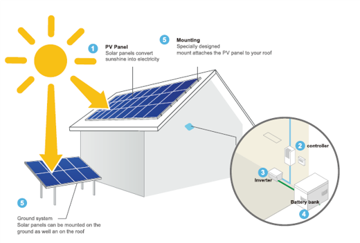
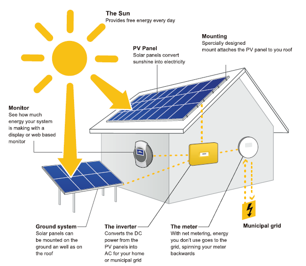

WE COMBINE ENERGY AND DIGITAL WORLD TOGETHER TO OPTIMISE ENERGY USES AND BECOME 100% CLEAN ENERGY DEPENDENT ORGANISATION. Enersum aims for a Leading Solar Consultancy all across the globe. Backed by rich industry experience, we are highly engaged in offering an optimum grade Solar Structure Design Consultancy Service to our clients. Offered services are executed by our experienced professionals using the best grade machines and superior technology.
Advantages of Solar Energy
1. Renewable Energy Source: Solar energy is a truly renewable energy source. It can be harnessed in all areas of the world and is available every day.2. Reduces Electricity: Bills Not only will you be saving on the electricity bill, there is also a possibility to receive payments for the surplus energy that you export back to the grid.
3. Low Maintenance Costs: Solar energy systems generally don’t require a lot of maintenance. You only need to keep them relatively clean, so cleaning them a couple of times per year will do the job. Apart from the inverter, the cables also need maintenance to ensure your solar power system runs at maximum efficiency. So, after covering the initial cost of the solar system, you can expect very little spending on maintenance and repair work.
4. Technology Development: Technology in the solar power industry is constantly advancing and improvements will intensify in the future. Innovations in quantum physics and nanotechnology can potentially increase the effectiveness of solar panels & will increase the efficiency.
We are associated with solar power projects in KWp / MWp and we are well versed with techno commercial experience in the following:-
1. We can make complete project report for solar power requirement technically.
2. We can give complete commercial viability of project.
Solar energy can be utilised through two different routes, as solar thermal route and solar electric (solar photovoltaic) routes. Solar thermal route uses the sun's heat to produce hot water or air, cook food, drying materials etc. Solar photovoltaic uses sun's heat to produce electricity for lighting home and building, running motors, pumps, electric appliances, and lighting.
SOLAR PHOTOVOLTAIC:-
Photovoltaic (PV) power systems installed on the surfaces of buildings allow the possibility of combining energy production with other functions of the building envelope including structural support, weatherproofing, shading, insulation or solar thermal collection. Cost savings through these combined functions can be substantial.Additionally, no high- value land is required, no separate support structure is necessary and electricity is generated at the point of use.Higher usage of energy resulting into depletion of finite source of fossil fuel reserve and enhance the concern over energy security, Increase environmental pollution (Solid – Ash content, Liquid- Effluent, Gas- SOx, NOx, CO, CO2, SPM and others) contributing to Global Warming and Climate Change.

OFF GRID SOLAR SYSTEM
These systems are used where conventional grid supply is not available or is irregular. In an SPV power plant, electricity is centrally generated and made available to users through a local grid in a ‘stand- alone mode’. The most common use for such plants is the electrification of remote villages, power for hospitals, hotels, communication equipment, railway stations etc.

GRID CONNECTED SOLAR SYSTEM
Grid connected solar system use an inverter that synchronises with the utility power. These systems do not generally require batteries, although batteries can be used to provide backup power if the utility power goes out. Grid connected solar is easier to install and maintain than stand-alone system.
Grid connected solar system use an inverter that synchronises with the utility power. These systems do not generally require batteries, although batteries can be used to provide backup power if the utility power goes out. Grid connected solar is easier to install and maintain than stand-alone system.